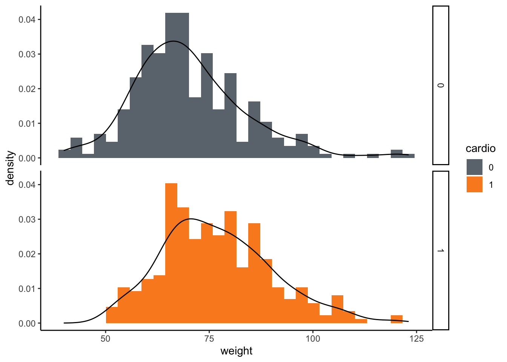

Descriptive Statistics
In this section, we will focus on descriptive statistics and indices, and how these relate to the characteristics of numerical distributions.
Distributions and variables
First of all, distributions are collections of data points from a given variable which are sampled from a population of interest.
The types of variables we can encounter are diverse. We can have categorical and numerical variables, the former can be ordinal as well, while the latter can either be continuous or discrete. In the following dataset, named cv_dis, we have 3 variables of interest relating to pressures, summarized in 6 columns. The variables of interest are the kind of pressure (sys vs dia) and the time point at which the measure was taken. We have both categorical and continuous variables in cv_dis, and some of the columns need to be converted into factors, since they are originally recognized as dbl, so numeric, while we know that they represent categories encoded in integer numbers.
# Manipulate data
cv_dis_operated <- cv_dis %>%
pivot_longer(names_to = "bloodp_visit", values_to = "pressure", sys_1:dia_3) %>% # Pivot on pressures
separate(bloodp_visit, c("type_p", "visit"), sep = "_") %>% # separate type of pressure and number of visit in two columns
pivot_wider(names_from = "type_p", values_from = "pressure") # pivot wider to gather the diastolic and systolic pressure as two separate columns
# Now bind the first dataset to other patients from a different dataset
cv_dis_binded <- cv_dis %>% bind_rows(cv_dis_2)
# Join additional clinical information
cv_dis_joined <- cv_dis %>% full_join(cv_dis_3, by=c('pat_id'='patient'))Now we can move onto descriptive statistics and the use of indices to describe data.
Indices of center position
# Mean (overestimates many times) - mean(Variable)
# Geometric mean (for avg growth rates and logged data) - prod(Variable)^(1/(n()-sum(is.na(Variable))))
# Harmonic mean (for avg ratios) - 1/mean(1/Variable)
# Median (splits the distribution in 2 equal parts) - median(Variable)Indices of dispersion
# Quantiles (quartile and IQR) - quantile(Variable, probs = 0.25) --> percentile 25th
# Min - min(Variable)
# Max - max(Variable)
# Variance (uses the arithmetic mean) - var(Variable)
# Std Dev (uses the arithmetic mean) - sd(Variable)
# Coefficient of var (unitless, comparable to each other) - sd(Variable) / mean(Variable)Excluding missing values from analyses (one possible way) na.rm = TRUE (ex. mean(Variable, na.rm = TRUE)). Data collection for statistics happens in samples coming from a bigger population, so the data is always a representative piece of information coming from the population. The coefficient of variation can be extremely useful to compare variability across different kinds of variables. It is clear that since these indices are related to the arithmetic mean, all of them are influenced by the validity of the arithmetic mean on the distribution itself. This means that the arithmetic mean, and the associated dispersion indices, need to be used carefully when analyzing data distributions, since they might not be very representiative (for example in the case of heavily skewed distributions).
Missing data
Handling missing data
In this section, we are going to focus on handling missing data, which can be a problem in R for different reasons, first of all it invalidates any kind of statistical analysis while propagating errors in code given silent handling habits in R. We start by loading the finalfit package. This package will provide very useful function to have a look at the data and assess the status of the variables.
# Translate some of the variables in the dataset to factors since they are char or dbl
cv_dis <- cv_dis %>% mutate_at(vars(gender, chol, gluc, cardio), as.factor)
# Sum up the condition of the dataset by using the finalfit functionality
glimpse_df <- cv_dis %>% ff_glimpse()
# This returns a list with 2 dfs, one for categorical and one for continous variables
glimpse_df$Continuous
label var_type n missing_n missing_percent mean sd min
pat_id pat_id <dbl> 634 0 0.0 359.9 208.9 1.0
age age <dbl> 634 0 0.0 54.0 9.6 39.0
height height <dbl> 608 26 4.1 164.2 8.0 130.0
weight weight <dbl> 603 31 4.9 73.6 13.9 40.0
sys_1 sys_1 <dbl> 634 0 0.0 125.1 16.7 78.9
sys_2 sys_2 <dbl> 634 0 0.0 126.3 16.6 80.0
sys_3 sys_3 <dbl> 557 77 12.1 127.7 16.7 83.8
dia_1 dia_1 <dbl> 634 0 0.0 79.8 10.0 21.4
dia_2 dia_2 <dbl> 634 0 0.0 81.0 9.5 60.0
dia_3 dia_3 <dbl> 557 77 12.1 82.3 9.6 58.7
quartile_25 median quartile_75 max
pat_id 176.2 360.0 540.8 720.0
age 49.0 54.0 59.0 162.0
height 158.8 165.0 170.0 187.0
weight 65.0 72.0 81.0 123.0
sys_1 117.0 120.3 136.2 207.3
sys_2 120.0 120.0 140.0 210.0
sys_3 118.8 123.1 137.7 212.6
dia_1 75.6 79.1 86.5 122.9
dia_2 80.0 80.0 90.0 120.0
dia_3 78.5 81.5 88.2 124.8
$Categorical
label var_type n missing_n missing_percent levels_n levels
gender gender <fct> 634 0 0.0 2 "F", "M"
chol chol <fct> 634 0 0.0 3 "1", "2", "3"
gluc gluc <fct> 634 0 0.0 3 "1", "2", "3"
cardio cardio <fct> 634 0 0.0 2 "0", "1"
levels_count levels_percent
gender 403, 231 64, 36
chol 478, 74, 82 75, 12, 13
gluc 530, 47, 57 83.6, 7.4, 9.0
cardio 314, 320 50, 50This function is really useful to summarize the data, it conveniently highlights missing values as well. In the continuous values dataframe we can also find additional information related to indices and range of the continuous data. Doing this, we can immediately spot the fact that the maximum age value is 162, which of course is wrong (below).
glimpse_df$Continuous[,c('min','max','missing_n','missing_percent')] min max missing_n missing_percent
pat_id 1.0 720.0 0 0.0
age 39.0 162.0 0 0.0
height 130.0 187.0 26 4.1
weight 40.0 123.0 31 4.9
sys_1 78.9 207.3 0 0.0
sys_2 80.0 210.0 0 0.0
sys_3 83.8 212.6 77 12.1
dia_1 21.4 122.9 0 0.0
dia_2 60.0 120.0 0 0.0
dia_3 58.7 124.8 77 12.1Now, the finalfit package allows us to also plot missing values. In this case we can show where the missing values are located in the dataset, check for alignment of missing values within the data if we expect so (like if a there is a missing value for systolic pressure at a specific visit, then we also expect the diastolic pressure for that visit too) or check whether something unexpectd in missing values is happening. The missing_pattern() function instead allows us to understand which variables are more related in terms of missing values.
cv_dis %>% missing_plot()cv_dis %>% missing_pattern() pat_id age gender chol gluc cardio sys_1 sys_2 dia_1 dia_2 height weight
510 1 1 1 1 1 1 1 1 1 1 1 1
74 1 1 1 1 1 1 1 1 1 1 1 1
23 1 1 1 1 1 1 1 1 1 1 1 0
1 1 1 1 1 1 1 1 1 1 1 1 0
18 1 1 1 1 1 1 1 1 1 1 0 1
1 1 1 1 1 1 1 1 1 1 1 0 1
6 1 1 1 1 1 1 1 1 1 1 0 0
1 1 1 1 1 1 1 1 1 1 1 0 0
0 0 0 0 0 0 0 0 0 0 26 31
sys_3 dia_3
510 1 1 0
74 0 0 2
23 1 1 1
1 0 0 3
18 1 1 1
1 0 0 3
6 1 1 2
1 0 0 4
77 77 211Data visualization solutions
Continuous variables
Here we are going to use the package ggplot2 to visualize a few variables and eventually some relationships between them.
# Visualize the ditribution of weights colored by cardiovascular status
ggplot(data = cv_dis, mapping = aes(x = weight, fill=cardio)) +
geom_histogram() +
scale_fill_manual(values=c('0'='#6c757d', '1'='#fb8b24'))+
facet_grid(cardio~.) +
theme_classic()Additionally, on top of this we can add a density estimation which might be useful to compare our current distribution to a reference distribution like a standard normal one.
# Visualize the ditribution of weights colored by cardiovascular status
ggplot(data = cv_dis, mapping = aes(x = weight, fill=cardio)) +
geom_histogram(aes(y=..density..)) + # This is a built-in way to plot a density on an histogram
geom_density(color='black', fill=NA) +
scale_fill_manual(values=c('0'='#6c757d', '1'='#fb8b24'))+
facet_grid(cardio~.) +
theme_classic()
We can also plot different relationships between continuous variables in the dataset one versus the other to check for relationships in the data. For example, here we can show the relationship between the different blood pressures. The density normalizes an histogram by taking the single binwidths to the number of observations falling within each bin.
# Visualize the distributions of weights and systolic pressure as a scatterplot colored by cardiovascular status (a bit cluttered)
ggplot(data = cv_dis, aes(x = weight, y = sys_1, col = cardio)) +
geom_point(size=3, alpha=0.7) +
scale_color_manual(values=c('0'='#6c757d', '1'='#fb8b24'))+
theme_classic()# Visualize the distributions of weights and systolic pressure arranged by cardiovascular status (better)
ggplot(data = cv_dis, aes(x = weight, y = sys_1)) +
geom_density2d_filled() +
facet_grid(cardio~.) +
theme_classic()What about distribution of weights across genders using boxplots?
# Gender proportions across cardiac condition
ggplot(cv_dis, aes(x = gender, y=height, fill = gender)) +
geom_boxplot(width=0.25)+
scale_fill_manual(values=c('F'='#C97B84', 'M'='#388697'))+
theme_minimal()Categorical variables
In this case we are going to plot a categorical variable.
# Gender proportions across cardiac condition
ggplot(cv_dis, aes(x = cardio, fill = gender)) +
geom_bar(width=0.5)+
scale_fill_manual(values=c('F'='#C97B84', 'M'='#388697'))+
theme_minimal()Plot data using GGally
The package GGally allows the user to plot mutliple variable pairwise in order to check for relationships within the data.
# Use GGally to plot pairwise relationships with variables
ggpair_plot <- cv_dis %>% select(-one_of('pat_id')) %>%
ggpairs()
ggpair_plot + theme_classic()Hypothesis Testing
Hypothesis testing is the process by which we can understand whether variability between two or more distributions is statistically significant. In statistics, we end up having different hypothesis, the null hypothesis (\(H_0\)) and the opposite of the null hypothesis (the alternative hypothesis), which is the actual hypothesis (\(H_1\)). Successful tests of difference explain the outcome by rejecting the null hypothesis. For instance, a t-test (a parametric test) posits the null hypothesis as the means of two distributions being equal. This means that we are hoping that the difference between the two means is actually 0. Out of all the samples we can pick from a population, the mean of which, we can calculate, the number of outcomes of subtracting the two means will lead to the generation of a probability distribution of the delta-mean being far off 0 given the thruthfulness of the null hypothesis. Since, thanks to the central limit theorem, this distribution will be normal with mean 0, we can set thresholds on the probability distribution over which we can reject the null hypothesis (the actual P-value used). Since the distribution is symmetrical, we can either test for mean differences in both directions (\(\mu_a = \mu_b\)) with a two-sided test, if we instead already know which is the expected outcome wanted (i.e. that the mean of one distribution should be higher than the other one) we need to use a one-tailed test.
As a rule of thumb, non-parametric tests are used when sample sizes are small, data is better represented by the median and/ord we have ordinal data or ranked data.
Sample sizes are able to improve the power of a test since they reduce standard error (\(\mu / \sqrt{n}\)), which in turn defines the confidence interval around the means of the two samples distributions (which, in the case of a t-test, are defined using a parameter z which comes from the Student’s t distribution). In other cases, we can use parametric tests with small sample sizes in the case we know that the sample we are looking at comes from a normally distributed population (i.e. heights in the population).
Tests that compare different continuous distributions can use specific measures of the distributions (i.e. mean, parametric) or can just be based on the median of the distribution (non-parametric).
Here we will show a demo of tests and when they are optimally used, first of all we start with testing differences between continuous variables in a parametric way, these can be within group (paired) or across groups (unpaired) and are the t-test (indipendent or paired) and ANOVAs.
Concerning categorical variables, we can test the significance co-occurrence of two or more by using either a Fisher’s exact test or a \({\chi}^2\) test.
# Pick some data randomly grouped by cardiac condition
set.seed(111)
cv_dis_test <- cv_dis %>%
mutate_at(vars(gender, chol, gluc, cardio), as.factor) %>%
na.omit() %>%
group_by(cardio) %>%
sample_n(200) %>% # we can test also paired samples
ungroup()
# Two-group comparison, categorical variables (chi-squared or Fisher's exact test)
# Is cardiovascular disease incidence different between males and females?
# This test is very powerful with large (>5 in at least a square) sample size, we will use Fisher's instead.
chisq.test(cv_dis_test$cardio, cv_dis_test$gender)$p.value[1] 0.1223074# Do this in tidyverse way
cv_dis_test %>%
summarise(pval_chi = chisq.test(cardio, gender)$p.value,
pval_fis = fisher.test(cardio, gender)$p.value)# A tibble: 1 × 2
pval_chi pval_fis
<dbl> <dbl>
1 0.122 0.122From this we can conclude that the test is not significant based on a chi-squared distribution value, therefore we accept the null hypothesis that cardiac conditions are the same across males and females.
In this following case, we can instead compare differences between two continuous distributions (systolic pressures across cardiac conditions). Here, given a condition of pseudo-normality, we can use a t-test (independent) to compare the means of the distributions.
## -- Independent t-test
t.test(sys_1 ~ cardio, data = cv_dis_test)
Welch Two Sample t-test
data: sys_1 by cardio
t = -9.7267, df = 354.9, p-value < 2.2e-16
alternative hypothesis: true difference in means is not equal to 0
95 percent confidence interval:
-17.28831 -11.47299
sample estimates:
mean in group 0 mean in group 1
118.4320 132.8126 t.test(sys_1 ~ cardio, data = cv_dis_test)$p.value[1] 5.602789e-20In this case instead we do see a difference, and in fact, if we plot the distributions and compare them even visually, we can appreciate a visible difference.
cv_dis_test %>%
ggplot(aes(x = cardio, y = sys_1)) +
geom_boxplot() +
theme_minimal()The Welch’s correction is telling us that the function is taking care of the difference in variances in the two distributions. This behaviour is default in R. This takes care of the variance assumption (which can be assessed with a Levene test) in a t-test, the other main assumption about normality is actually checked using either a Shapiro-Wilk test or a Kolmogorov-Smirnov test. Both of these tests posit that the null hypothesis is normality, therefore low p-values in these tests mean that the distributions are not normal. With these tests we need to be careful since they can be quite strict, meaning that many times they might indicate to reject the null hypothesis even if the distribution appears quite normal and we feel safe using a parametric test.
# Check for normality
# graphically check normal distribution
ggplot(cv_dis_test, aes(sys_1)) +
geom_histogram(aes(y = stat(density)), binwidth = 15) +
stat_function(
fun = dnorm,
args = list(mean = mean(cv_dis_test$sys_1, na.rm = T), sd = sd(cv_dis_test$sys_1, na.rm = T)),
lwd = 2,
col = '#fb8b24'
) +
facet_wrap( ~ cardio, ncol = 2, scales = "free_y") +
theme_classic()# shapiro test
cardio_0 <- cv_dis_test %>% filter(cardio == 0) %>% pull(sys_1)
cardio_1 <- cv_dis_test %>% filter(cardio == 1) %>% pull(sys_1)
shapiro.test(cardio_0)
Shapiro-Wilk normality test
data: cardio_0
W = 0.88339, p-value = 2.485e-11shapiro.test(cardio_1)
Shapiro-Wilk normality test
data: cardio_1
W = 0.95269, p-value = 3.457e-06cv_dis_test %>%
group_by(cardio) %>%
summarise(shap_test = shapiro.test(sys_1)$p.value)# A tibble: 2 × 2
cardio shap_test
<fct> <dbl>
1 0 2.48e-11
2 1 3.46e- 6In the case we need to use a non-parametric test, we can use a Mann-Withney U test or a Wilcoxon-ranked-sum test. The first is for paired data while the second is for unpaired data. In R, these two are both implemented in a single function as shown below.
cv_dis_test %>%
summarise(pval_t = wilcox.test(sys_1 ~ cardio)$p.value,
pval_mw_pair = wilcox.test(sys_1 ~ cardio, paired = T)$p.value)# A tibble: 1 × 2
pval_t pval_mw_pair
<dbl> <dbl>
1 1.67e-18 1.55e-16In the scenario of comparing multiple distributions, using ANOVA we need to keep in mind that it is just referring p-values for differences in means from one to the other samples. In this way, we will then need a post-hoc test in order to check pairwise differences between means.